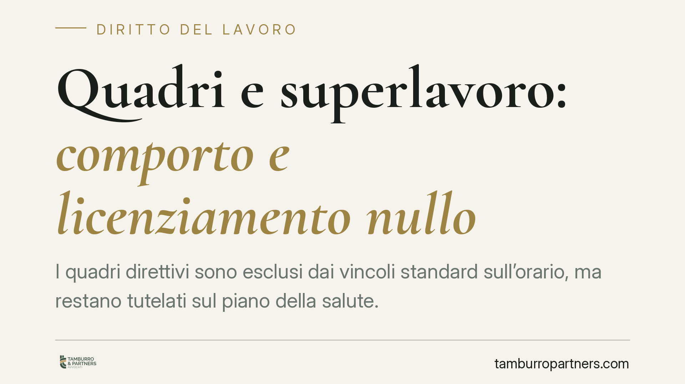

Quadri e superlavoro: comporto e licenziamento nullo
I quadri direttivi sono esclusi dai vincoli standard sull'orario, ma restano tutelati sul piano della salute. Secondo un orientamento della Cassazione, se la malattia che porta al superamento del comporto deriva da un sovraccarico imputabile al datore, il licenziamento è nullo. Un tema che incide su reintegro, differenze retributive e risarcimento del danno.

Il caso e il principio
Il quadro direttivo occupa una posizione particolare nel rapporto di lavoro: pur non rientrando nella dirigenza, esercita funzioni di rilievo e gode di autonomia organizzativa. Per questo è tradizionalmente escluso dai limiti ordinari sull'orario di lavoro (si veda l'art. 17 del D.lgs. 66/2003, che consente deroghe per i lavoratori con funzioni di rilievo).
Questa esclusione, però, non cancella la tutela della salute. La Corte di Cassazione, Sezione Lavoro, ha affermato che il superamento del cosiddetto periodo di comporto non legittima il licenziamento quando l'assenza per malattia è stata provocata da un carico di lavoro eccessivo e imputabile al datore. In tal caso il recesso è nullo, con conseguente reintegro e tutela economica.
*Nota redazionale: gli estremi della pronuncia (numero e anno) vanno verificati e inseriti prima della pubblicazione, così da ancorare il principio a una decisione identificabile.*
Inquadramento normativo
Due norme reggono la questione.
L'art. 2110 c.c. disciplina il periodo di comporto, cioè l'arco di tempo durante il quale il lavoratore assente per malattia conserva il posto. Superato quel limite, il datore può in linea di principio recedere. È la norma cardine in materia di assenze.
L'art. 2087 c.c. impone al datore di adottare le misure necessarie a tutelare l'integrità fisica e la personalità morale del lavoratore. È una norma di chiusura: fonda la responsabilità datoriale anche in assenza di una previsione specifica.
Il punto di saldatura è il nesso causale. Se l'organizzazione del lavoro viola l'art. 2087 c.c. e provoca la malattia, le assenze che ne derivano non possono essere computate nel comporto: non sono un rischio a carico del lavoratore, ma la conseguenza di un inadempimento datoriale. Il licenziamento fondato su quelle assenze risulta quindi nullo.
Implicazioni pratiche
Per il lavoratore (quadro direttivo). L'esclusione dai vincoli orari non equivale a una disponibilità illimitata. Se la patologia nasce da un sovraccarico strutturale — turni abnormi, obiettivi incompatibili con le ore disponibili, carenza cronica di personale — la tutela resta piena. Il punto critico è la prova: occorre dimostrare sia l'eccesso di lavoro sia il collegamento con la malattia, di norma attraverso documentazione aziendale, comunicazioni, certificazioni mediche e, spesso, consulenza tecnica.
Per il datore di lavoro. La qualifica di quadro non mette al riparo da responsabilità. Assegnare carichi oggettivamente insostenibili espone a un doppio rischio: la nullità del licenziamento per comporto e un'autonoma domanda risarcitoria ex art. 2087 c.c. La tracciabilità delle attività e un dimensionamento coerente delle risorse diventano quindi elementi di gestione del rischio, non solo di organizzazione.
I termini di impugnazione
Chi intende contestare il licenziamento deve rispettare i termini dell'art. 6 della L. 604/1966, come modificato dalla L. 183/2010: l'impugnazione stragiudiziale va proposta entro 60 giorni dalla comunicazione del recesso; segue un termine di 180 giorni per il deposito del ricorso giudiziale (o per la comunicazione del tentativo di conciliazione o arbitrato). Il mancato rispetto comporta la decadenza.
Cosa fare in concreto
- Conservare la documentazione sui carichi di lavoro: email, assegnazione di obiettivi, report, comunicazioni interne che diano conto delle ore effettive e delle richieste ricevute.
- Richiedere e custodire le certificazioni mediche che descrivano la patologia e, se possibile, il collegamento con le condizioni lavorative.
- Verificare il conteggio del comporto applicato dal datore, distinguendo le assenze ordinarie da quelle potenzialmente riconducibili al sovraccarico.
- Rispettare i termini di impugnazione (60 + 180 giorni), calcolandoli dalla data di ricezione del licenziamento.
- Valutare il caso concreto: la configurabilità del nesso causale e la scelta della strategia dipendono dall'analisi delle circostanze specifiche e del materiale probatorio disponibile.
Disclaimer
Contributo informativo a cura di Tamburro & Partners - Avv. Giuseppe Tamburro. Non costituisce parere legale.
Ogni storia di lavoro ha i suoi tempi.
Se gestisci HR e vuoi un confronto su contenzioso, ispezioni o licenziamenti, scrivi allo studio. Ti rispondiamo entro un giorno lavorativo.